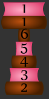
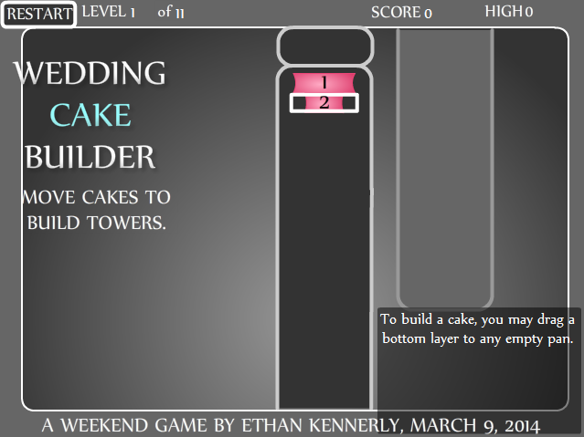
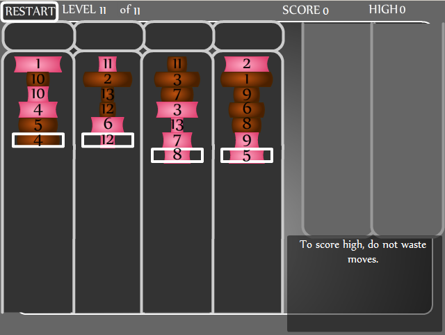

WEDDING CAKE BUILDER Alternate strawberry and chocolate layers to build tiered cakes. The goal is to build each tiered cake, stacked from largest layer on bottom to smallest layer on top. Each tiered cake only contains layers of the same flavor. Your workers were disorganized. Now you have a lot of cake layers to sort out without much space. CLICK AND DRAG a layer of cake. You may move a layer to an empty pan. You may move the next larger layer under a layer of the opposite flavor. Example: strawberry 8 may move under chocolate 7. Build all the cakes to advance to the next wedding deal. If you cannot build all the cakes, click Restart. Longer chains of building a cake scores more points. Finishing in fewer moves scores more points.  Can you build a two-layer wedding cake?  Can you build two thirteen-layer wedding cakes?  To cheat to a higher grade, click the level number and then click Restart. A weekend game by Ethan Kennerly (March 9, 2014) Inspired by FreeCell on Politaire. http://politaire.com/freecell